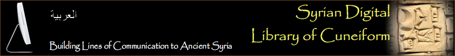

|  | |
|
|
|
Musée National de DamasJusqu’à la fin de la Première Guerre mondiale, la Syrie ne disposait d’aucun musée. Le musée de Damas a été fondé en 1919,
un an avant l'établissement du Mandat français. Ainsi est-il aujourd’hui l'institution culturelle la plus ancienne de Syrie.
Il s’est d'abord situé à Al-Madrasa Al-Adiliyeh, bâtiment historique de la vieille ville datant des 12e-13e siècles.
Un nouveau bâtiment a été construit entre 1936 et 1979, qui est devenu ce qui est aujourd’hui le Musée National de Syrie.
Depuis lors, les collections n’ont cessé de s’enrichir grâce aux découvertes venant de nombreuses fouilles archéologiques.
Les objets ont été répartis chronologiquement : préhistoire, Orient ancien, antiquités grecques, romaines, byzantines, islamiques et art moderne.
Le musée conserve environ 5,000 tablettes cunéiformes. Elles proviennent principalement de:
|
Arabic English Tablettes du Musée National de Damas, par période: Ebla (ca. 2400-2350 BC) Middle Babylonian (ca. 1500-1000 BC) Tablettes du Musée National de Damas, par genre: Letters Lexical texts Tablettes du Musée National de Damas, par site: Ras Ibn Hani Ras Shamra / Ugarit Tell Hariri / Mari Tell Mardikh / Ebla Tell Mishrife / Qatna Tell Sabi Abyad Tell Sakka Tell Siyanu Tell Taban / Tabatum Chercher toutes les inscriptions du CDLI |